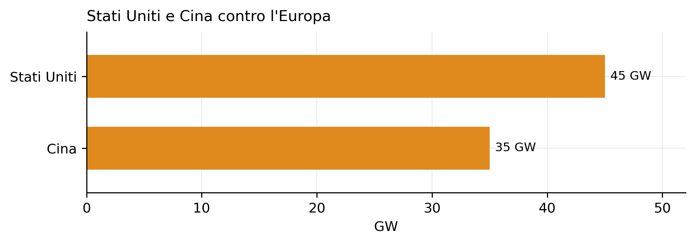
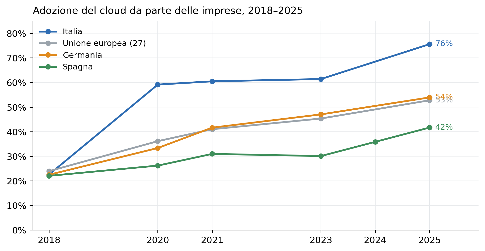
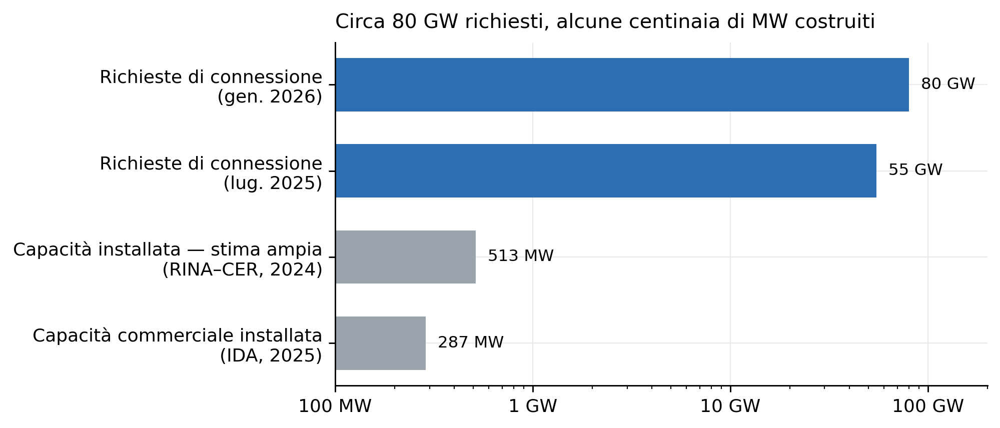
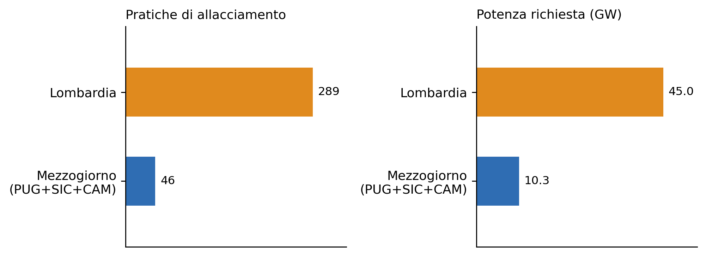

Data center: Unione europea, Italia, Mezzogiorno
Domanda di potenza, localizzazione, quadro normativo e tensioni territoriali
Paolo Volterra ![]()
Le richieste di connessione di data center alla rete elettrica italiana sono passate da circa 55 GW a metà 2025 a circa 80 GW all’inizio del 2026, a fronte di una capacità effettivamente installata dell’ordine di alcune centinaia di megawatt e concentrata al Nord. Il documento ricostruisce il fenomeno su tre livelli — mercato e regolazione europea, domanda e quadro normativo italiano, posizione del Mezzogiorno — e distingue in ogni passaggio la capacità operativa dai progetti annunciati e dalle domande di allacciamento. Nel Mezzogiorno i data center sono oggi soprattutto una prospettiva di attrattività («hub digitale del Mediterraneo»): la dotazione di cavi sottomarini, fibra ed energia rinnovabile è reale, ma gli impianti di primo livello restano al Nord e le regioni meridionali agiscono per attrazione, mentre la Lombardia, satura, ha introdotto la prima legge regionale di contenimento. Il fronte normativo — europeo e italiano — spinge sulla semplificazione autorizzativa; le tensioni aperte riguardano consumo di suolo, acqua, disponibilità di potenza elettrica e ripartizione del costo degli adeguamenti di rete.
data center, Mezzogiorno, ZES, Terna, domanda elettrica, cloud, autorizzazione unica, coesione territoriale
Versione citabile su Zenodo, con il PDF: doi.org/10.5281/zenodo.22228336.
1 Perimetro
Un data center è un edificio che ospita apparati di calcolo e archiviazione, con gli impianti di alimentazione elettrica e raffreddamento necessari a tenerli in funzione in continuità. La strategia del Ministero delle Imprese e del Made in Italy pubblicata nel novembre 2025 [1] li classifica per potenza elettrica nominale in tre fasce.
| Tipo | Potenza | Funzione prevalente |
|---|---|---|
| Hyperscale | oltre 100 MW | cloud pubblico globale, addestramento e inferenza di modelli di intelligenza artificiale, grandi archivi |
| Medio | oltre 5 MW | copertura di un’area geografica, cloud privati, continuità operativa di imprese locali |
| Edge | meno di 5 MW | servizi a bassa latenza vicino all’utente, Internet delle cose, distribuzione di contenuti |
Tabella 1: Classificazione dei data center per potenza elettrica nominale [1]
Sul piano dell’efficienza l’Italia si colloca sopra la media dell’Unione europea su entrambi gli indicatori standard: il Power Usage Effectiveness, cioè il rapporto fra energia totale assorbita ed energia che arriva agli apparati di calcolo, vale 1,46 in Italia contro 1,36 nella media dell’Unione; il Water Usage Effectiveness, cioè i metri cubi d’acqua consumati per megawattora, vale 0,70 contro 0,58 [1]. Valori più alti indicano un impianto meno efficiente.
Il fenomeno non nasce con la diffusione dei servizi di intelligenza artificiale generativa. Le strutture dedicate al calcolo elettronico esistono da decenni, il cloud commerciale su larga scala dal 2006, i primi data center italiani di rilievo dalla metà degli anni Novanta. Ciò che è cambiato dal 2023 è la natura della domanda: si passa da data center generalisti, dedicati a hosting e archiviazione, a impianti ottimizzati per l’intelligenza artificiale, con una densità di potenza per armadio molto più alta e un legame diretto con l’addestramento dei modelli.
L’analisi procede su tre livelli: il mercato e la regolazione europea; la domanda di potenza e il quadro normativo italiano; la posizione del Mezzogiorno.
2 Il quadro europeo
2.1 Mercato e divario con Stati Uniti e Cina
I poli storici della colocation europea — la locazione di spazio e servizi in data center di terzi — sono cinque: Francoforte, Londra, Amsterdam, Parigi e Dublino. Attorno a questi mercati si concentra ancora circa il 70 % della capacità europea. Rispetto a Stati Uniti e Cina l’Unione europea resta indietro sia nella capacità installata sia nell’autonomia, per la dipendenza dai grandi operatori cloud statunitensi.

Figura 1: Capacità di calcolo installata nei data center, 2024. La stima europea è di fonte diversa e va letta come ordine di grandezza.
Il mercato della costruzione di data center in Europa occidentale è stimato in crescita da oltre 9 miliardi di dollari nel 2023 a oltre 14 miliardi nel 2029, con un tasso di crescita medio annuo di circa l’8 % [1]. I consumi elettrici dei data center dell’Unione sono previsti in aumento di circa il 13 % l’anno fino al 2030 [1], [2].
2.2 Il lato della domanda: adozione del cloud
La spinta alla costruzione di nuova capacità viene dal lato della domanda. La quota di imprese europee con almeno dieci addetti che acquistano servizi di cloud computing è passata da meno di un quarto nel 2018 a oltre la metà nel 2025; l’Italia, partita più avanti della media, nel 2025 supera il 75 % [3].

Figura 2: Imprese con almeno 10 addetti che acquistano servizi di cloud computing (quota %). Fonte: Eurostat, indagine sull’uso delle tecnologie dell’informazione nelle imprese.
2.3 Regolazione europea: accelerazione e vincoli ambientali
Il quadro europeo si muove in due direzioni contemporaneamente. Da un lato la proposta di Cloud and AI Development Act, presentata dalla Commissione nel 2026, punta ad almeno triplicare la capacità dei data center dell’Unione in cinque-sette anni, a semplificare e accelerare le autorizzazioni e a istituire zone di accelerazione con iter dedicato [4], [5]. Dall’altro un corpo di norme ambientali già in vigore aggiunge obblighi di rendicontazione e criteri di sostenibilità.
| Norma | Contenuto principale |
|---|---|
| Reg. UE 2019/424 | requisiti di progettazione ecocompatibile per server e sistemi di archiviazione |
| Dir. UE 2023/1791 (efficienza energetica) | sistema comune di classificazione della sostenibilità dei data center |
| Reg. della Commissione 1364/2024 | definizioni europee di data center e obblighi di comunicazione dei consumi |
| d.lgs. 131/2024 (recepimento italiano) | gli operatori, inclusi quelli di colocation, comunicano al Ministero dell’Ambiente consumi e rendicontazione di sostenibilità, per una banca dati europea |
| Reg. UE 2020/741 | riuso delle acque reflue depurate, anche per usi industriali |
| Dir. UE 2024/3019 | neutralità energetica dei depuratori urbani entro il 2045, con eventuale surplus destinabile ai data center |
Tabella 2: Principali norme ambientali europee applicabili ai data center
Il regolamento 1364/2024 colloca i data center fra le attività rilevanti per la mitigazione del cambiamento climatico nella tassonomia europea delle attività sostenibili. Nelle relazioni sulla gestione le società quotate italiane che gestiscono o utilizzano data center dichiarano quasi sempre l’attività come ammissibile ma non allineata ai criteri ambientali.
3 L’Italia
3.1 La domanda di potenza sulla rete elettrica
L’indicatore più citato per misurare l’interesse verso l’Italia è il volume delle richieste di connessione di data center presentate a Terna, la società che gestisce la rete di trasmissione nazionale. Questo dato non misura capacità installata né investimenti confermati: registra domande di allacciamento, spesso multiple sulla stessa area e presentate anche da soggetti diversi dagli operatori dei data center.

Figura 3: Richieste di connessione di data center alla rete di trasmissione nazionale contro capacità effettivamente installata. Scala logaritmica. Fonti: Terna, Relazione finanziaria annuale 2025; strategia MIMIT nov. 2025; IDA; SVIMEZ.
Alla data della Relazione finanziaria annuale 2025, Terna riporta «quasi 80 GW di richieste di connessione di data center» a fine gennaio 2026, a fronte di circa 55 GW riferiti a metà 2025 [1], [6]. La stessa strategia ministeriale osserva che questo volume «fa riflettere sull’attuale hype del settore» [1]. La capacità effettivamente installata è di due ordini di grandezza inferiore: 287 MW in 146 data center commerciali secondo l’associazione di settore [7], circa 513 MW secondo il perimetro più ampio usato dalla SVIMEZ, di cui 238 MW nella sola area di Milano [8]. Le due stime non sono direttamente confrontabili perché adottano perimetri diversi.
3.2 Mercato dei servizi
| Segmento | Valore | Unità | Anno |
|---|---|---|---|
| Colocation | 654 | mln EUR | 2023 |
| Intelligenza artificiale | 760 | mln EUR | 2023 |
| Cloud pubblico e privato | 4.8 | mln EUR | 2023 |
Tabella 3: Mercato italiano dei servizi collegati ai data center. Fonti: strategia MIMIT nov. 2025; Osservatorio Data Center del Politecnico di Milano.
3.3 Il quadro normativo
Il disegno di legge di iniziativa parlamentare sui data center (C.2083, poi S.1821) è stato approvato dalla Camera il 24 febbraio 2026 e trasmesso al Senato [9]. Delega il Governo ad adottare entro sei mesi uno o più decreti legislativi per disciplinare i data center: semplificazioni amministrative, destinazione d’uso industriale, codice statistico dedicato, tempi certi, attenzione al consumo di suolo ed energia. Qualifica i data center come infrastruttura strategica nazionale. Il disegno di legge è coordinato con l’articolo 8 del decreto-legge 21/2026, che introduce una autorizzazione unica con procedimento unificato della durata di dieci mesi, qualifica i data center come opere di pubblica utilità e privilegia il riuso di aree industriali dismesse.
| Strumento | Soglia | Beneficio |
|---|---|---|
| art. 30 DL 50/2022 | investimenti oltre 25 mln € con ricadute occupazionali | potere sostitutivo dell’Unità di missione ministeriale sulle amministrazioni inerti |
| art. 13 DL 104/2023 | programmi esteri oltre 1 mld € | preminente interesse strategico nazionale, commissario straordinario, autorizzazione unica sostitutiva |
| art. 8 DL 21/2026 | tutti i data center | autorizzazione unica in dieci mesi, opera di pubblica utilità, procedure ambientali e urbanistiche accelerate |
| DDL S.1821 (delega, al Senato) | — | destinazione d’uso industriale, codice statistico, data center come infrastruttura strategica nazionale |
| ZES Unica (DL 124/2023) | data center nelle 8 regioni del Mezzogiorno | sportello unico digitale, autorizzazione unica previa conferenza di servizi semplificata |
Sul versante degli incentivi economici diretti il quadro è più scarno. I data center in Italia sono classificati come attività di servizi e non industriale, il che li colloca in una zona grigia rispetto agli strumenti pensati per l’industria: il credito d’imposta per la ZES Unica richiede una struttura produttiva, e una parte delle agevolazioni europee di maggiore importo — fino a 30 miliardi di euro per le AI gigafactories — è destinata alla capacità di calcolo pubblica europea, non ai data center commerciali. Gli strumenti attivi oggi sono quindi soprattutto di semplificazione procedurale.
3.4 Le fonti amministrative non registrano il fenomeno
Le basi dati amministrative italiane non permettono di misurare l’investimento privato in data center. Il codice di attività economica ATECO ha introdotto una nota esplicativa «data center» solo dal 1° gennaio 2025, all’interno di un codice sovra-inclusivo che comprende ogni servizio di hosting; un codice dedicato è atteso con la revisione del 2027. Le statistiche creditizie della Banca d’Italia non scendono sotto la branca di attività. Il Registro nazionale degli aiuti di Stato e il Fondo di garanzia per le piccole e medie imprese registrano solo micro-operazioni di società di servizi informatici, di scala estranea a un data center. Nelle autorizzazioni uniche della ZES Unica non compaiono data center riconoscibili. La politica di coesione finanzia solo data center pubblici regionali. Per misurare il fenomeno servono fonti dedicate: richieste di connessione a Terna, censimenti di settore, comunicati societari.
4 Il Mezzogiorno
4.1 La prospettiva «hub digitale del Mediterraneo»
La tesi ricorrente nelle fonti istituzionali e nella stampa economica è che il Mezzogiorno possa diventare un nodo della connettività europea verso Nord Africa e Medio Oriente. Gli argomenti a sostegno sono materiali e verificabili:
| Fattore | Contenuto |
|---|---|
| Cavi sottomarini | approdo di decine di cavi internazionali a Bari, Palermo, Catania, Mazara del Vallo, Cagliari; nuovi sistemi BlueMed, 2Africa, SeaMed |
| Fibra terrestre | dorsale nazionale già estesa fra Sud e Nord |
| Punti di interscambio | nuovi nodi neutri a Bari e Caserta, presenza consolidata a Palermo |
| Rete elettrica | collegamenti in corrente continua Tyrrhenian Link (Sicilia–Campania–Sardegna) e Adriatic Link (Abruzzo–Marche) in costruzione |
| Energia rinnovabile | eolico e fotovoltaico installati, consumabili in loco |
| Corsia autorizzativa | sportello unico digitale della ZES Unica |
La SVIMEZ tratta i data center dentro il capitolo sui prezzi zonali dell’energia: li legge come una leva di politica industriale e di coesione e come domanda-ancora per le rinnovabili meridionali [8]. Indica come vincoli strutturali la stabilità e il costo dell’energia, la disponibilità di potenza nelle reti locali del Sud e la carenza di competenze tecniche. Si tratta di una lettura qualificata e favorevole, non di un dato.
4.2 I numeri: richieste al Sud e concentrazione al Nord

Figura 4: Richieste di connessione di data center a Terna al 31 luglio 2026: tre regioni del Mezzogiorno contro la sola Lombardia. Fonte: dati Terna riportati dalla stampa [10].
Al 31 luglio 2026 Puglia, Sicilia e Campania sommano 46 pratiche di allacciamento per 10,3 GW di potenza richiesta — Puglia 29 pratiche e 7,76 GW, Sicilia 9 e 1,52, Campania 8 e 1,02 — contro le 289 pratiche e 44,96 GW della sola Lombardia [10]. Il Mezzogiorno vale circa un quinto della Lombardia in numero di pratiche e circa un quarto in potenza. È un segnale di movimento, non di parità. La Basilicata, non inclusa in quel conteggio, è entrata nell’elenco nei mesi successivi. Il dettaglio regionale non compare nella relazione di Terna, che riporta solo l’aggregato nazionale.
Sul costruito la distanza è netta. Gli impianti di primo livello — i grandi operatori cloud internazionali — sono tutti al Nord; l’investimento di 4,3 miliardi di euro annunciato da Microsoft nel 2024 è concentrato nell’area di Milano. Nelle relazioni sulla gestione delle società quotate italiane ogni progetto di data center citato è settentrionale: le opere di rete di Terna per i «futuri data center» riguardano la provincia di Milano; i tre progetti di recupero del calore di A2A sono a Brescia, Milano e Settimo Milanese; il parco di data center più esteso fra le quotate, quello di TIM–Noovle con 100,8 MW, è distribuito fra Milano, Roma e Torino. Il Mezzogiorno compare in questo perimetro solo come punto di approdo dei cavi e sede di colocation, con il Sicily Open Data Center di Sparkle a Palermo.
4.3 Progetti annunciati al Sud
| Progetto | Regione | Sito | Tipo di area | Investimento (mln €) | Potenza IT (MW) | Stato |
|---|---|---|---|---|---|---|
| Data for Med | Campania | Caserta (ex Graftech) | brownfield | 300 | 22.5 | in sviluppo |
| Data Felix | Campania | Caserta | brownfield | 1 | in sviluppo | |
| Progetto ZES Catania | Sicilia | Catania | nan | 3.000 | prima fase autorizzata | |
| Digital Vault Sulcis | Sardegna | Nuraxi Figus (ex Monte Sinni) | brownfield minerario | 1.490 | 30 | interesse strategico nazionale (ago 2026) |
| Digital Metalla | Sardegna | San Giovanni Iglesias (ex miniera) | brownfield minerario | annunciato | ||
| DC Cerano/Brindisi | Puglia | Cerano (ex centrale Enel) | brownfield | annunciato |
Tabella 4: Progetti di data center annunciati nel Mezzogiorno. Cifre dichiarate dai promotori o riportate dalla stampa, non verificate su fonte primaria.
Tutti i progetti annunciati insistono su aree industriali o minerarie dismesse — l’ex sito Graftech a Caserta, le ex miniere del Sulcis in Sardegna, l’ex centrale Enel di Cerano in Puglia — coerentemente con l’indirizzo del riuso di aree già compromesse. Nessuno ha però ancora raggiunto la fase di cantiere in modo documentato.
4.4 Asimmetria normativa fra Nord e Sud
| Lombardia | Mezzogiorno (8 regioni ZES) | |
|---|---|---|
| Pipeline di richieste | 289 pratiche / 44,96 GW; circa due terzi dei nuovi data center pianificati nel 2026 | 46+ pratiche / oltre 10 GW |
| Impianti di primo livello | presenti (Microsoft, campus hyperscale) | assenti |
| Norma regionale | L.R. 11/2026: oneri urbanistici +200 % su aree verdi, solo energia rinnovabile, vietata l’acqua da acquedotto per il raffreddamento, priorità alle aree dismesse | nessuna legge regionale organica; in Puglia gruppo di lavoro istituito con L.R. 42/2024 |
| Segno dell’azione pubblica | governo e contenimento del consumo di suolo | attrazione tramite ZES Unica e credito d’imposta |
Tabella 5: Confronto fra la regolazione lombarda e quella del Mezzogiorno. Fonti: L.R. Lombardia 11/2026; dati Terna riportati dalla stampa.
La Lombardia, con la rete in prossimità della saturazione, ha approvato nel giugno 2026 la prima legge regionale organica sui data center, orientata a disciplinarne e contenerne l’insediamento [11]. Il Mezzogiorno non ha una legislazione regionale equivalente e agisce per attrazione. Ne deriva un rischio speculare: le regioni meridionali potrebbero attrarre soprattutto i progetti che al Nord incontrano vincoli crescenti, non necessariamente quelli più qualificati.
5 Tensioni aperte
- Disponibilità di potenza elettrica. La capacità delle reti locali meridionali di accogliere nuovi carichi di grande dimensione è indicata dalla SVIMEZ come uno dei principali limiti all’espansione [8].
- Acqua. Molte aree del Mezzogiorno sono in condizione di stress idrico e la gerarchia degli usi privilegia quello umano e agricolo. La strategia ministeriale insiste su raffreddamento a ciclo chiuso e riuso di acque reflue affinate, oggi utilizzate solo per il 4 % del totale depurato [1].
- Consumo di suolo. La corsia autorizzativa accelerata e la qualifica di opera di pubblica utilità possono favorire nuove edificazioni nonostante l’indirizzo del riuso di aree dismesse [12].
- Costo degli adeguamenti di rete. Resta aperta la questione di chi sostenga il costo dei rinforzi necessari ad allacciare grandi quantità di potenza: gli operatori dei data center o la generalità degli utenti in bolletta.
- Occupazione. Un data center di medie dimensioni occupa direttamente qualche decina di addetti; il beneficio locale è nell’indotto di costruzione, nel gettito comunale e nella resilienza della rete, non nell’occupazione diretta di massa.
6 Sintesi
La domanda di connessione di data center in Italia è cresciuta rapidamente e continua a crescere, ma resta in larga parte una manifestazione di interesse: fra le richieste presentate a Terna e la capacità effettivamente in esercizio ci sono due ordini di grandezza. Il Mezzogiorno partecipa a questa domanda in misura non trascurabile — circa un quarto della potenza richiesta in Lombardia — e dispone di fattori localizzativi reali, in particolare l’approdo dei cavi sottomarini e l’energia rinnovabile. Gli impianti di primo livello, però, restano al Nord, e la mappa dei siti dismessi mappati dal settore per il riuso non include il Sud.
Sul piano normativo, europeo e italiano, la spinta prevalente è verso la semplificazione e l’accelerazione delle autorizzazioni. Le tensioni non risolte — potenza elettrica, acqua, suolo, ripartizione del costo di rete — sono più acute proprio nelle regioni meridionali, dove la corsia veloce della ZES si combina con lo stress idrico e con reti locali meno capienti. La verifica del passaggio dall’intenzione all’investimento effettivo, sito per sito, è il naturale sviluppo di questo lavoro.
Nota metodologica
Questo documento nasce dall’interazione di tre componenti. L’autore definisce le domande, esercita il giudizio critico e assume la responsabilità scientifica ed editoriale del risultato. Strumenti di intelligenza artificiale generativa sono impiegati a supporto della ricerca bibliografica, della lettura, della sintesi, della riorganizzazione argomentativa e della revisione del testo. Un’infrastruttura open source sviluppata dall’autore automatizza il reperimento, l’armonizzazione e il controllo dei dati dalle fonti statistiche ufficiali, e mantiene l’elaborazione documentata e riproducibile.
Le fonti sono pubblicamente accessibili e citate con la loro denominazione ufficiale; l’analisi è pertanto integralmente auditabile e replicabile da terzi a partire da esse. Le tabelle e i grafici sono elaborazioni dell’autore: calcoli, aggregazioni, trasformazioni e scelte di rappresentazione sono attribuibili all’autore e non agli enti produttori dei dati.
La responsabilità per le fonti utilizzate, le analisi condotte, le elaborazioni effettuate, le interpretazioni proposte e le conclusioni formulate resta interamente in capo all’autore. L’intelligenza artificiale è stata impiegata come ambiente di supporto cognitivo ed editoriale, non come fonte primaria, autore autonomo o sostituto del giudizio critico.